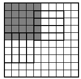

In a $10 \times 10$ square, all of the cells of the upper left $5 \times 5$ square are painted black and the rest of the cells are painted white. What is the largest number of polygons that can be cut from this square $($on the boundaries of the cells$)$ so that in every polygon there would be three times as many white cells than black cells? $($Polygons do not have to be equal in shape or size.$)$
In each cut-out polygon, there must be cells of both colours. So, there must be a black cell that borders a white one. But there are only 9 such cells. $($See the figure for an example of how to cut the square into 9 polygons$)$.
9 polygons.